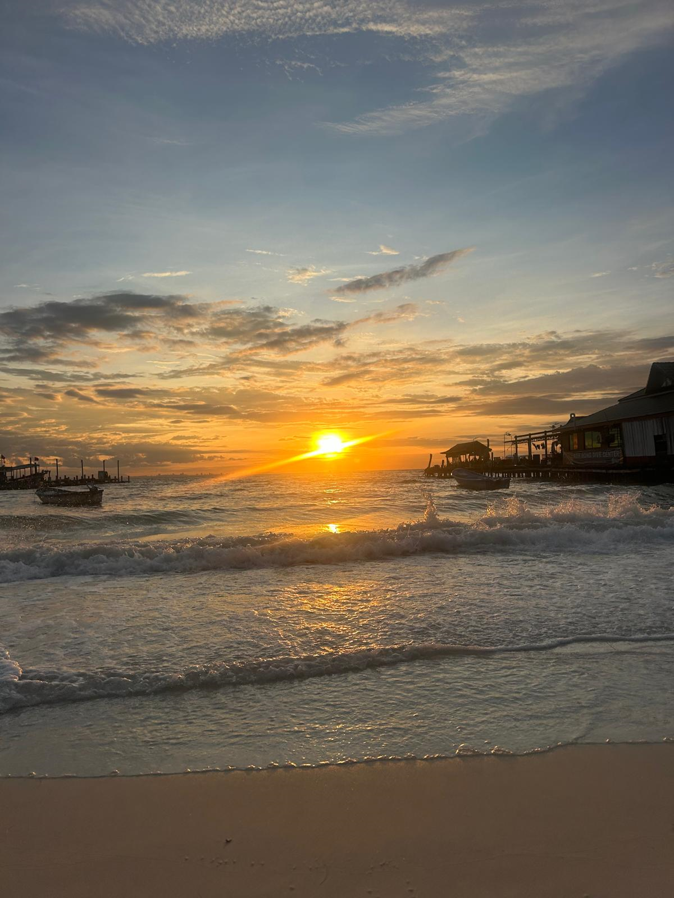

I bought a BMW F850GS in August 2024 after getting my license in March of the same year to fulfill a long-term ambition of owning a motorbike. I enjoy exploring different parts of the country on the bike and enjoy the feeling of freedom you get when riding.
I am currently a recruit in the Royal Marines Reserves training for the Commando tests in May 2025.
Since I was young I have had a keen interest in a variety of sports. Growing up I played at regional and national level for badminton and tennis, respectively, while I also enjoyed playing football and golf. Nowadays I'm usually watching sport on TV rather than playing it and choose to get my exercise running or at the gym, however, I still do like to play when I can (whatever the sport!)
Like many others I love to travel. After I finished High School, I spent a year in Australia at the age of 19. I caught the travel bug after this and have taken every opportunity to travel since then and have been fortunate enough to travel through academia and work: I spent my 3rd year of university studying in North Carolina, completed my final year's master project in Barcelona and spent several months in Rome studying a business degree as part of my graduate programme. Outside of work, I have visited a few other countries in Europe (although I have many more to see) and recently visited Thailand and Cambodia at the end fo 2024.
Some of my personal goals for the future include learning to speak another language at conversational level and starting a business.
Personal project showcasing some basic app building skills - Flask, HTML, javascript skills, FPL project - link here ... sh

My bike parked with a view of the Eildon hills in my hometown of Melrose.
Koh Rong Island, Cambodia